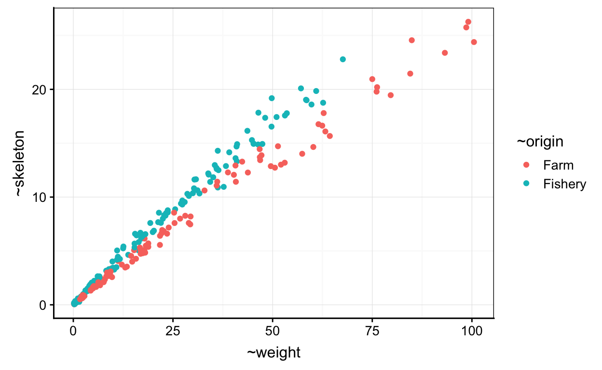
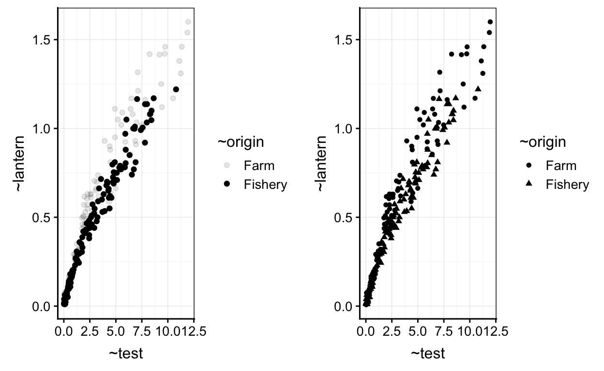
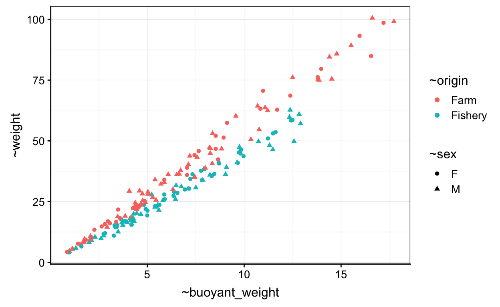
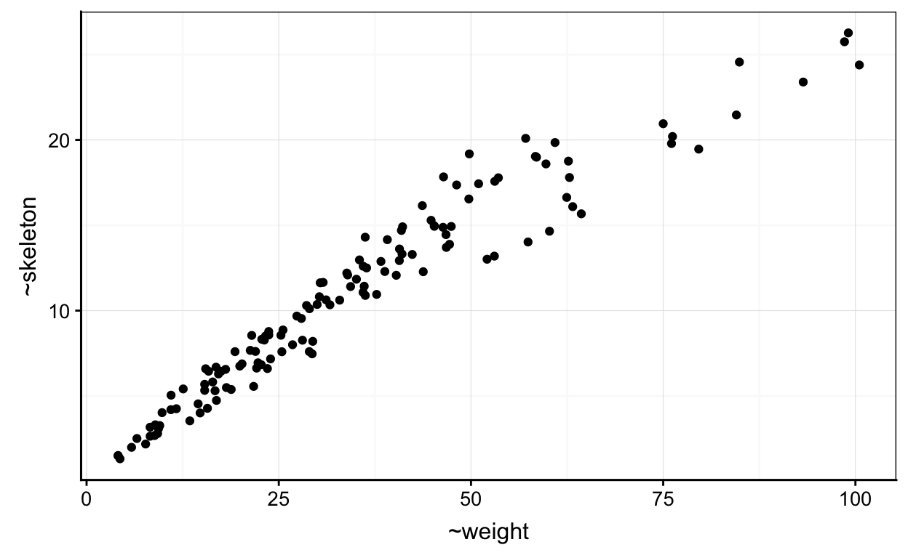
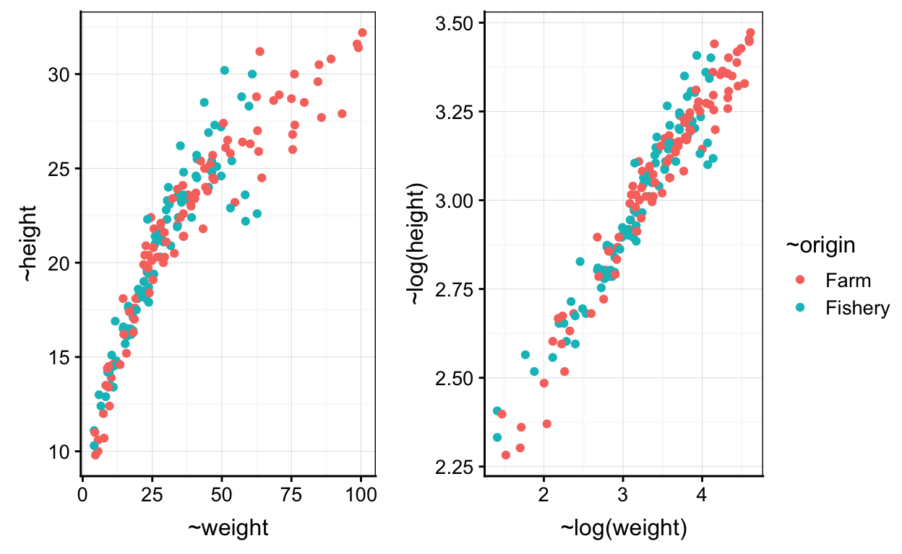

Introduction
Ce questionnaire a pour objectif de vérifier l’acquisition des concepts lié à la réalisation d’un nuage de points. Il comporte :
Exercice théorique
Exercice pratique
L’ensemble de vos réponses sont collectées afin d’analyser votre progression
Quizz
Retour sur la vidéo
Commencons par réaliser rapidement les graphiques vu durant la capsule vidéo.
Exercice 1
Le jeu de données urchin_bio portant sur la biométrie d’oursins est assigné à urchin. Les variables employées pour ce premier graphique sont le poids du squelette (skeleton) et le poids total (weight).
## Warning: Removed 163 rows containing missing values (geom_point).Réalisez un nuage de point montrant le poids du squelette en ordonnée et le poids en abscisse afin d’obtenir le graphique ci-dessus.
chart(DF, formula = YNUM ~ XNUM) +
geom_point()chart(urchin, formula = YNUM ~ XNUM) +
geom_point()chart(urchin, formula = skeleton ~ weight) +
geom_point()Exercice 2
Le jeu de données contient des valeurs manquantes comme le précise le message suivant lors de la réalisation du graphique précédent
Warning message: Removed 163 rows containing missing values (geom_point).
Dans la fonction geom_point(), il est possible d’employer l’argument na.rm = afin de préciser qu’il y a des valeurs manquantes (na.rm = TRUE)

Réalisez un nuage de point montrant le poids du squelette en ordonnée et le poids en abscisse. Précisez qu’il y a des valeurs manquantes.
chart(DF, formula = YNUM ~ XNUM) +
geom_point()chart(urchin, formula = skeleton ~ weight) +
geom_point(na.rm = TRUE)Exercice 3
Nous souhaitons visualiser la différence d’origine des oursins mesurés. Ces informations se situent dans la variable sur l’origine (origin). L’utilisation de la couleur peut permettre de différencier ces derniers. La formule peut etre complétée avec l’argument faisant référence à la couleur (%col=%).

Réalisez un nuage de point montrant le poids du squelette en ordonnée et le poids en abscisse. Utilisez la couleur afin de différencier l’origine des individus et précisez à nouveau qu’il y a des valeurs manquantes.
chart(DF, formula = YNUM ~ XNUM %col=% FACTOR) +
geom_point()chart(urchin, formula = skeleton ~ weight %col=% origin) +
geom_point(na.rm = TRUE)Les Exercices sur le nuage de point
Maintenant que nous avons rapidement réalisé les graphiques vu durant la vidéo, nous te proposons de changer de variable pour expérimenter d’autres fonctions et argumenst liées au nuage de points.
Exercice 1
La couleur n’est pas forcément l’argument le plus judicieux à employer pour différencier une variable facteur au sein d’un nuage de points. Il vous sera parfois demandé d’employer des formes (%shape=%) ou encore des nuances de gris différentes (%alpha=%).

Nous pouvons observer que l’utilisation de la forme n’est pas forcément l’argument le plus judicieux dans cette exemple.
Intéressons nous à la masse de la lanterne d’aristote (lantern) en fonction de la masse du test (test).
Réalisez un nuage de point montrant le masse de la lanterne d’aristote (lantern) en ordonnée et la masse du test (test) en abscisse. Utilisez les nuances de gris afin de différencier l’origine des individus. Précisez à nouveau qu’il y a des valeurs manquantes.
chart(DF, formula = YNUM ~ XNUM ) +
geom_point()chart(DF, formula = YNUM ~ XNUM %alpha=% FACTOR) +
geom_point()chart(urchin, formula = lantern ~ test %alpha=% origin) +
geom_point(na.rm = TRUE)Exercice 2
Intéressons nous à la masse (weight) des individus en fonction de leur masse immergée (buoyant_weight).
Nous pouvons avoir le besoin d’employer 2 variables facteurs pour obtenir un graphique plus informatif. La variable portant sur le sex des individus (sex) peut être employée.

Réalisez un nuage de point montrant la masse en ordonnée et la masse immergée en abscisse. Utilisez la couleur afin de différencier l’origine des individus, différentes formes afin de différencier le sex des individus et précisez à nouveau qu’il y a des valeurs manquantes.
Vous pouvez observer qu’une première ligne de code vous est fournies afin de retirer les lignes de tableau ne contenant pas l’information sur le sex des individus.
urchin <- filter(urchin, sex != "NA")
chart(DF, formula = YNUM ~ XNUM) +
geom_point()urchin <- filter(urchin, sex != "NA")
chart(DF, formula = YNUM ~ XNUM %col=% FACTOR1 %shape=% FACTOR2) +
geom_point()urchin <- filter(urchin, sex != "NA")
chart(urchin, formula = weight ~ buoyant_weight %col=% origin %shape=% sex) +
geom_point(na.rm = TRUE)Exercice 3
Intéressons nous à la hauteur (height) en fonction de la masse (weight) des individus.
Réalisez un nuage de point montrant le logar de la masse en ordonnée et le logar la masse immergée en abscisse. Utilisez la couleur afin de différencier l’origine des individus et précisez à nouveau qu’il y a des valeurs manquantes.
chart(DF, formula = YNUM ~ XNUM) +
geom_point()chart(urchin, formula = log(YNUM) ~ log(XNUM)) +
geom_point()chart(urchin, formula = log(YNUM) ~ log(XNUM) %col=% FACTOR) +
geom_point()chart(urchin, formula = log(height) ~ log(weight) %col=% origin) +
geom_point(na.rm = TRUE)Challenge
Cette partie du learnR requiert d’appliquer les concepts vu précédement mais d’y ajouter de nouvelles que vous devez appréhender par vous même.
Employons le graphique que nous avons déjà réaliser précédement.

Nous souhaitons changer le nom des axes pour rendre le graphique présentable en francais.
Réalisez un nuage de point montrant le poids du squelette en ordonnée et le poids en abscisse et précisez qu’il y a des valeurs manquantes. De plus, changez le nom des variables Weight of skeleton [g] par Masse du squelette [g] et Total weight [g] par Masse totale [g].
chart(urchin, formula = skeleton ~ weight) +
geom_point(na.rm = TRUE) +
labs(x = " ", y = " ") chart(urchin, formula = skeleton ~ weight) +
geom_point(na.rm = TRUE) +
labs(x = "Masse totale [g]", y = "Masse du squelette [g]") Employons le graphique que nous avons déjà réaliser précédement utilisant la couleur comme variable facteur différenciant les oursins mesurés en élevage et en milieu naturel.

Nous souhaitons continuer la personalisation du graphique en changeant changer le nom des axes, Changer le nom de la légende pour rendre le graphique présentable en francais.
Réalisez un nuage de point montrant le poids du squelette en ordonnée et le poids en abscisse et précisez qu’il y a des valeurs manquantes. De plus, * changez le nom des variables Weight of skeleton [g] par Masse du squelette [g] et Total weight [g] par Masse totale [g]
Changez le nom des légendes
OriginparOrigine,FarmparElevageetFisheryparMilieu naturelChangez les deux couleurs par les couleurs de votre choix. Nous avons employé du jaune et du gros pour notre part.
chart(urchin, formula = skeleton ~ weight %col=% origin) +
geom_point(na.rm = TRUE) +
labs( x = " ", y = " ")+
scale_color_manual(values=c(" "," "), name = " ", labels = c(" ", " "))chart(urchin, formula = skeleton ~ weight %col=% origin) +
geom_point(na.rm = TRUE) +
labs( x = "Masse totale [g]", y = "Masse du squelette [g]")+
scale_color_manual(values=c('#999999','#E69F00'), name = "Origine", labels = c("Elevage", "Milieu naturel"))Conclusion
Vous venez de terminez votre séance d’exercice sur le nuage de point.
Pour obtenir de plus amples imformations sur le nuage de point, nous te renvoyons vers les ressources supplémentaires.